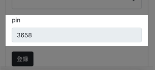

右のテンキーを使用して、4桁の暗証番号を入力してください。
入力が完了したら「送信」を押してください。
番号は予約用のサイトの「プロフィール」の欄から、画像の部分を確認することで確認できます。
暗証番号確認
----
1
2
3
4
5
6
7
8
9
C
0
OK
クリア
送信
GAPLESS
ロード中
Waiting for data...
初期の表示内容
案内再開
次の案内
案内停止
使用方法
高さ調節
地図を表示
×
音声入力を開始
読み上げを停止
×
<
>